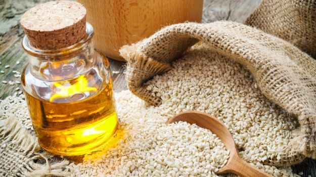

Como Fazer e usar o óleo de Gergelim

O óleo de gergelim é um produto amplamente reconhecido por suas propriedades nutricionais e terapêuticas. Extraído das sementes da planta Sesamum indicum, o óleo de gergelim é rico em ácidos graxos insaturados, vitamina E, antioxidantes, e minerais como cálcio e magnésio. Esse óleo é valorizado tanto na culinária quanto na medicina tradicional, especialmente na Ayurveda, onde é utilizado para promover a saúde da pele, reduzir a inflamação e nutrir o cabelo. Seu uso é versátil, abrangendo desde o preparo de alimentos até tratamentos de beleza e bem-estar.
Como fazer o óleo de gergelim em casa
Fazer óleo de gergelim em casa é um processo simples que permite aproveitar ao máximo os benefícios das sementes frescas. Aqui está um guia passo a passo para preparar seu próprio óleo de gergelim:
Fazer óleo de gergelim em casa é um processo simples que permite aproveitar ao máximo os benefícios das sementes frescas. Aqui está um guia passo a passo para preparar seu próprio óleo de gergelim:
Ingredientes necessários:
1 xícara de sementes de gergelim (preferencialmente orgânicas e sem casca).
Óleo base (opcional, como azeite de oliva, para maior rendimento).
Modo de preparo:
Torre levemente as sementes de gergelim em uma frigideira seca em fogo médio, mexendo constantemente até que estejam douradas e liberem um aroma agradável. Tome cuidado para não queimá-las, pois isso pode afetar o sabor do óleo.
Deixe as sementes esfriarem completamente.
Coloque as sementes torradas em um processador de alimentos ou liquidificador e bata até que se forme uma pasta espessa. Você pode adicionar um pouco de óleo base, como azeite de oliva, para facilitar o processo e aumentar o rendimento, se desejar.
Transfira a pasta de gergelim para um frasco de vidro limpo e adicione óleo base suficiente para cobrir a pasta completamente.
Deixe a mistura descansar em um local fresco e escuro por cerca de 1 a 2 semanas, agitando o frasco diariamente para ajudar a liberar os compostos das sementes.
Após esse período, coe a mistura usando um coador fino ou pano de musselina para separar o óleo das partículas sólidas.
Armazene o óleo de gergelim caseiro em um frasco de vidro escuro e limpo, em local fresco e longe da luz direta. Ele pode ser usado por várias semanas.
Como usar o óleo de gergelim
O óleo de gergelim é extremamente versátil e pode ser usado de diversas maneiras para tirar proveito de suas propriedades nutritivas e terapêuticas:
Hidratação da pele:O óleo de gergelim é um excelente hidratante natural para a pele, especialmente em climas secos. Aplique uma pequena quantidade diretamente na pele para hidratá-la e protegê-la contra o ressecamento. Suas propriedades antioxidantes também ajudam a combater os danos causados pelos radicais livres.
Massagens terapêuticas: Amplamente utilizado na medicina Ayurveda, o óleo de gergelim é ideal para massagens terapêuticas, ajudando a relaxar os músculos e melhorar a circulação sanguínea. Aqueça um pouco do óleo antes de aplicá-lo na pele para intensificar seus efeitos relaxantes e desintoxicantes.
Cuidados com o cabelo: Aplique o óleo de gergelim no couro cabeludo e ao longo do comprimento do cabelo para nutrir e fortalecer os fios, ajudando a prevenir a quebra e a queda de cabelo. Deixe o óleo agir por pelo menos 30 minutos ou durante a noite antes de lavar o cabelo com shampoo.
Cuidados com a boca (oil pulling): Na prática ayurvédica do "oil pulling," o óleo de gergelim é usado para enxaguar a boca com o objetivo de remover toxinas e melhorar a saúde bucal. Coloque uma colher de sopa de óleo de gergelim na boca e enxágue vigorosamente por 15 a 20 minutos, depois cuspa o óleo e enxágue a boca com água morna.
Uso culinário: O óleo de gergelim também é amplamente utilizado na culinária, especialmente em pratos asiáticos. Adicione algumas gotas ao final do cozimento para dar sabor e aroma aos alimentos, ou use-o para refogar vegetais e carnes.
Cuidados ao usar o óleo de gergelim
Apesar dos muitos benefícios do óleo de gergelim, é importante usá-lo com cautela, especialmente se você tem alergia a sementes. Sempre faça um teste de alergia aplicando uma pequena quantidade de óleo na pele e aguardando 24 horas para observar qualquer reação. Além disso, embora o óleo de gergelim seja geralmente seguro para uso externo e na culinária, é importante utilizar o produto com moderação, principalmente quando for usado internamente. Consulte um profissional de saúde ou um especialista em Ayurveda para orientações sobre o uso adequado do óleo de gergelim para fins terapêuticos e dietéticos.